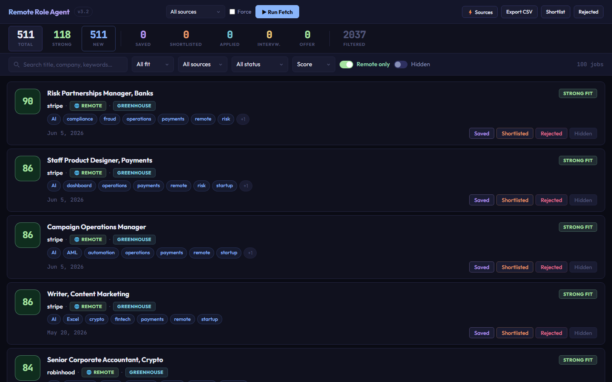

case study / automation
Remote Role Agent
A local, AI-assisted command center for the job hunt: it pulls remote U.S. listings from multiple sources, scores each one against my real target profile, and turns an unreadable firehose into a ranked queue.
The problem
Job boards optimize for volume, not fit. Forty applications deep, every "remote data role" feed looks the same, and the real work — figuring out which of two hundred listings deserves a tailored application — happens in your head, badly, at 11pm. I wanted that judgment encoded somewhere it could run consistently.
Remote Role Agent fetches listings from multiple sources on demand, deduplicates them into a local SQLite store, scores each against a weighted profile of what I'm actually targeting, and serves the result as a local Flask dashboard with saved/shortlisted/applied workflow states and CSV export.

One hard decision
Scoring instead of filtering. Filtering gives you a list you still have to read. Scoring gives you a ranked queue, which is what I actually wanted at 40 applications deep. The cost was that I had to define what "good fit" means numerically, and my first weights were wrong in a way I only found by disagreeing with the tool's top result three days running.
What I'd do differently
I'd store the raw job payload alongside the parsed fields. Every time I changed the parser I lost the ability to re-score old listings, so I was re-scraping boards that had already rate-limited me.
Under the hood
- Source connectors for multiple job APIs with per-source rate limiting and force-refresh control
- Keyword and profile-weight scoring with tag extraction, plus an optional AI review pass for the top of the queue
- SQLite persistence with dashboard stats, status workflow (saved → shortlisted → applied → interview → offer), notes, and hidden/rejected handling
- Local-first by design: your search targets and application history never leave your machine